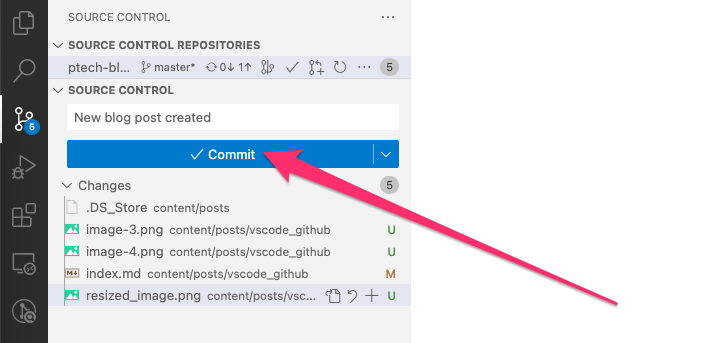
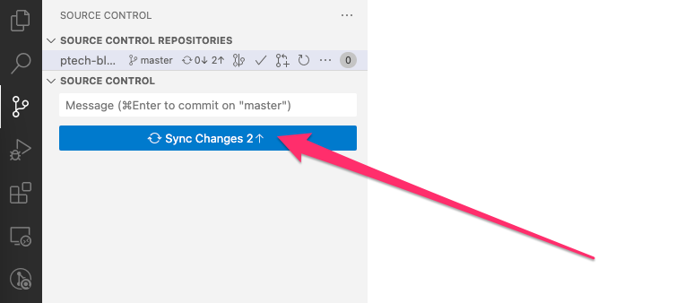
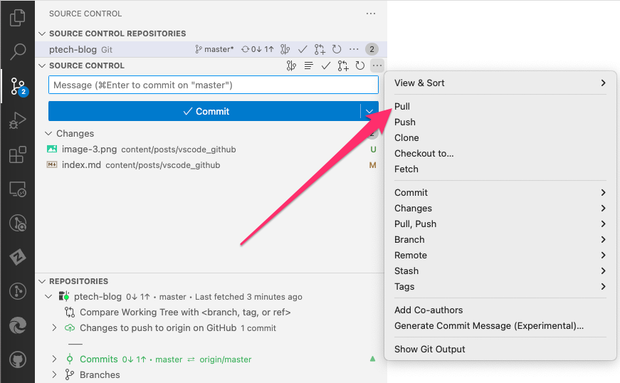

Code effortlessly in Visual Studio Code and sync with your GitHub Repositories
Posted by Marc Cubells
on Thu, Oct 5, 2023
Visual Studio Code (VS Code) is a powerful code editor that has become increasingly popular among developers. One of its many strengths is the ability to integrate seamlessly with version control systems, especially GitHub. This guide will walk you through the process of connecting VS Code to your GitHub repositories, making it easier than ever to code, commit, and push.
Follow the prompts to authenticate using either a token or your login credentials.
4. Making Changes and Pushing to GitHub
With the repository cloned and authentication set up, you can now make changes to your code:
Make changes to your files in VS Code.
Open the Source Control panel by clicking the branching icon on the sidebar.
Click the Commitbutton to commit your changes:

Click the Sync Changes button to push your commits to your GitHub Repository.

5. Pulling Changes from GitHub
If you’re working in a team or across different machines, you might want to pull the latest changes from GitHub:
Open the Source Control panel by clicking the branching icon on the sidebar.
Click the ... icon and choose Pull to fetch the latest updates.

Conclusion
Connecting VS Code to a GitHub repository offers a seamless development experience. By integrating these tools, you can enjoy the robust code editing features of VS Code while easily tracking and managing changes with GitHub. Embrace this setup to streamline your coding and collaboration endeavors!